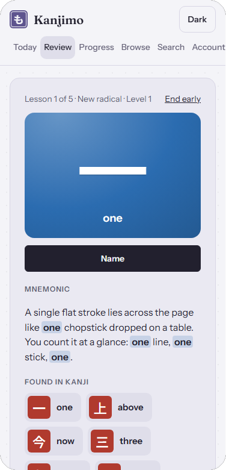
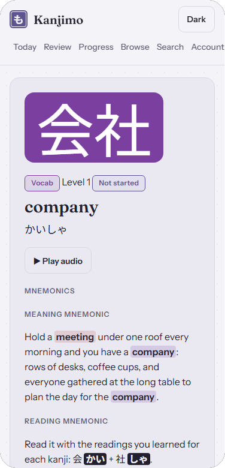
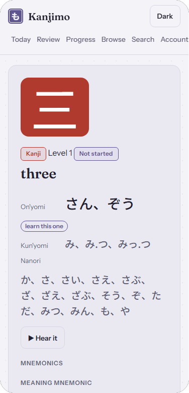

Learn every jōyō kanji, a few minutes a day
Kanjimo is a study app for adults who want to read Japanese. It teaches the 2,136 jōyō kanji, the 405 parts they are built from and about 6,800 words that use them, in 60 levels. A spaced-repetition schedule brings each item back just before you would forget it, and a daily quota keeps the workload steady.



What you get
- Lessons that show each kanji's parts first, then its meaning and the reading to learn.
- An original memory aid for every radical, kanji and word, plus a fixed English keyword for each on'yomi sound.
- Native recordings for about 2,300 words; other readings are spoken by your device's Japanese voice.
- Example sentences, a progress page with your level, streak and upcoming reviews, and sync across devices.
- Sign in with Google or with a one-time code sent to your email. No password.
Price
Free. All 60 levels open once you sign in, with no paid plan and no card to enter.
Who runs it
Kanjimo is made by Shanewas Ahmed Nabil, an individual in Japan. Dictionary data comes from open sources (JMdict, KANJIDIC2, KanjiVG, Tatoeba and Kanji alive), credited in the app. Questions: support@shanewas.com.
Kanjimo について
常用漢字2,136字と、その部品405種、約6,800語を60レベルで学ぶ学習アプリです。間隔反復で忘れる直前に復習を出し、オリジナルの記憶術と音声で覚えやすくしています。全60レベルを無料でご利用いただけます。